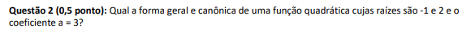

Função Quadrática
Sobre
Funções quadráticas são funções definidas pela expressão f(x) = ax² + bx + c. A, B e C são números reais e A precisa ser diferente de zero. Se B ou C valem 0, então a função é uma função incompleta. Seu gráfico é uma parábola sendo que o lado em que a concavidade está virado (seja para cima ou para baixo) depende do valor de a (se a for maior que 0, a concavidade é para cima, enquanto se a é menor que 0, a concavidade é oara baixo). Um exemplo de função quadrática é a função f(x) = 8x² + 7x + 5. O ponto C sempre é um ponto de intersecção com o eixo y (se for uma função completa). Achar o valor numérico de uma função quadrática é bem fácil, é só substituir o x pelos valores dados (exemplo = f(x) = 8x² + 7x + 5; x = 2 então f(2) = 8 . 2² + 7 . 2 + 5; y = 8 . 4 + 14 + 5; y = 32 + 14 + 5; y = 51). Às vezes, é preciso encontrar o valor de x. Por exemplo - o valor de x para que f(x) (ou seja, o y) seja 4. É só igualar a função a 4 e realizar a equação: 8x² + 7x + 5 = 4; 8x² + 7x + 9 = 0 - se tornou uma equação de segundo grau. Agora é só fazer o delta e resolver a equação. Quanto a achar as raízes da função (ou seja, o valor de x para f(x) = 0), na verdade também é bem fácil. É só igualar a função a 0 e realizar a equação de segundo grau, usando a fórmula de Bhaskara. Se o Delta dessa equação for 0, então a função tem apenas uma raiz. Se for positivo, então a função tem duas raízes. E, por fim, se for negativo, a função não tem nenhuma raiz. Essa explicação por meio de vídeo pode ser encontrada na galeria de vídeos.
Minha Experiência
Eu tive um pouco de dificuldade em entender e, efetivamente, aprender completamente funções quadráticas de início, pelo menos em comparação com a maioria dos conteúdos do ciclo passado. Acho que isso se deu porque eu me distraí um pouco durante a primeira aula síncrona. Eu tive que reassistir a mesma, mesmo depois de reler o conteúdo, para entender melhor. O que mais me fez sofrer nesse conteúdo foi encontrar a forma canônica de uma função, e isso me levou a ter dificuldade para realizar a questão 2 da primeira lista:

Por causa disso, eu tive que participar do atendimento na quinta-feira à tarde (25/02) e questionar minhas dúvidas. Acontece que o que nós havíamos estudado em aula não era necessariamente como fazer as funções em forma canônica, mas sim um jeito baseado no vértice. No fim, consegui realizar a questão, descobrindo o xv e xy: